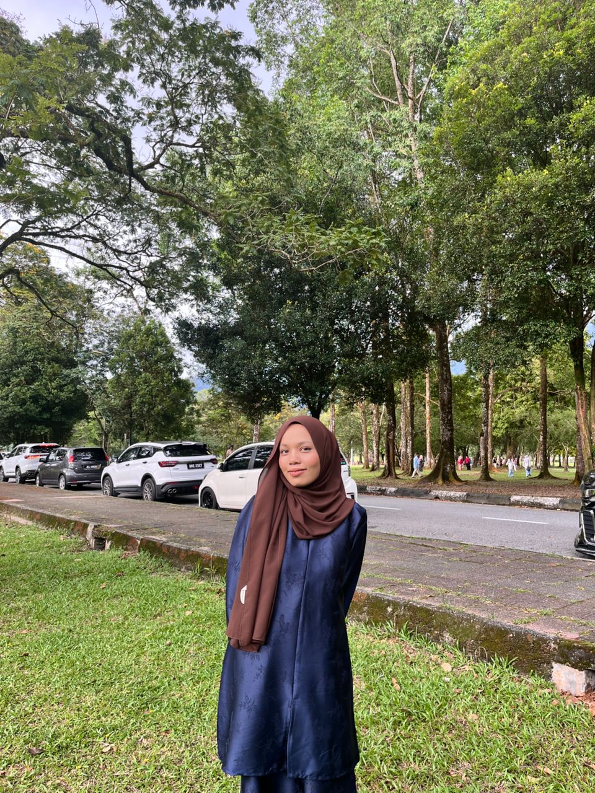
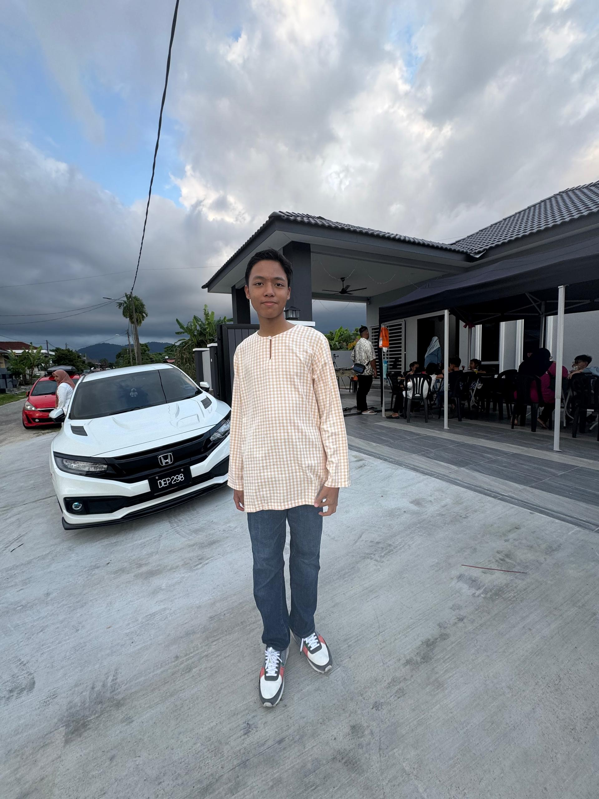
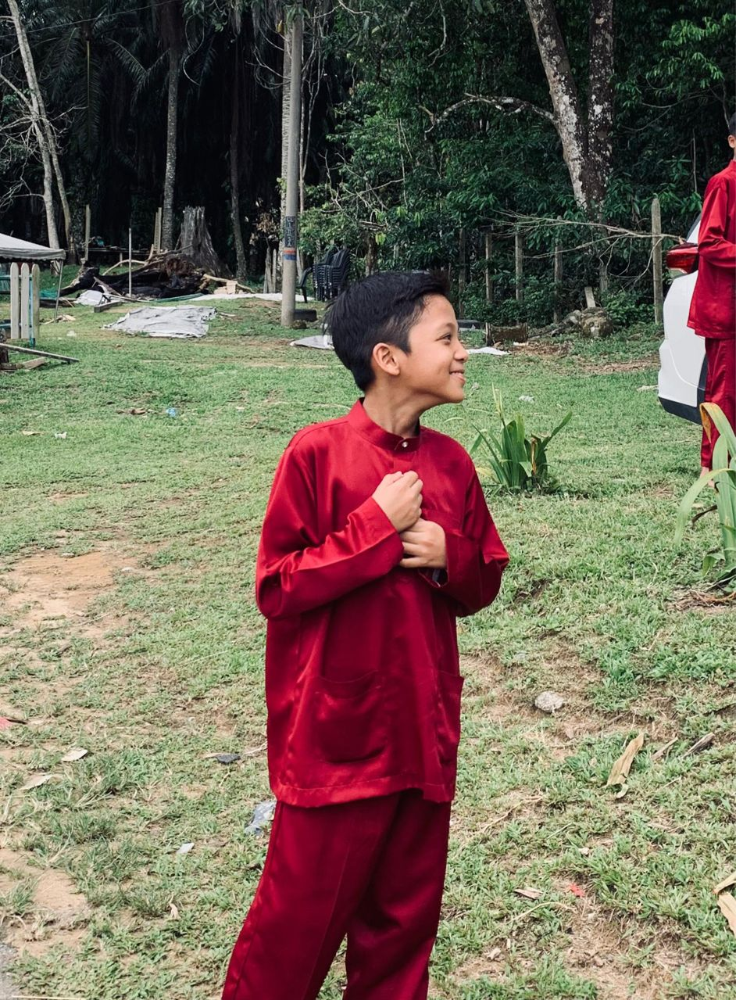
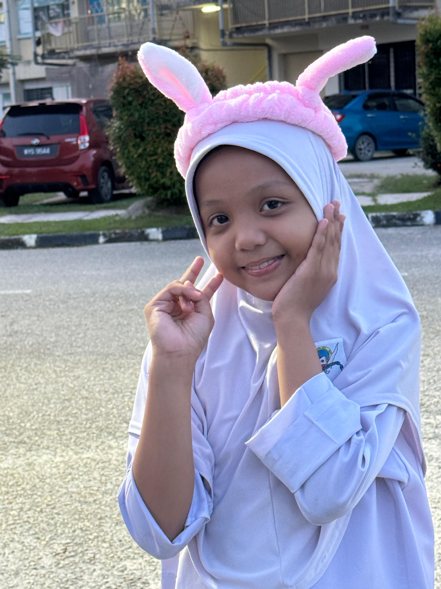

Afrina fatihah - (The Eldest sibling)
I’m the “kakak” — firm, sometimes fierce, and emotional depending on my mood. I spend time with my siblings when I can, listen to their cute school problems, and yes, we do argue from time to time.
But at the end of the day, I only want the best for them. I may not be the softest sister, but I try to lead by example and love them in my own way.Born :18 October 2005

👦Abal — Muhamad Hezbal Merdiyyaz
16 years old | Second child
The quiet and introverted one in the family. He’s very tall, calm, and noticeably more alim compared to the rest of us. Not the funniest, but he always tries — and that effort itself is cute.
Born: 15 June 2010

🧑 Rais — Ahmad Emmrais Rob Aidid
13 years old | Third child
A sports lover with endless energy. He loves teasing people, is sensitive at heart, and always cracking jokes — basically got my sense of humor. Currently studying at MCKK. A little hot-tempered, but full of character and charm.
Born: 11 October 2013

👧 Dinda — Dinda Salchaa
Youngest child
Active in sports and co-curricular activities. A total yapper — she loves talking, telling stories, and expressing her feelings. Sentimental, garang, and very protective. She follows almost everything her kakak does, has a soft heart, but also loves picking fights and complaining. Tall, loud, and full of personality.
Born: 2 January 2015